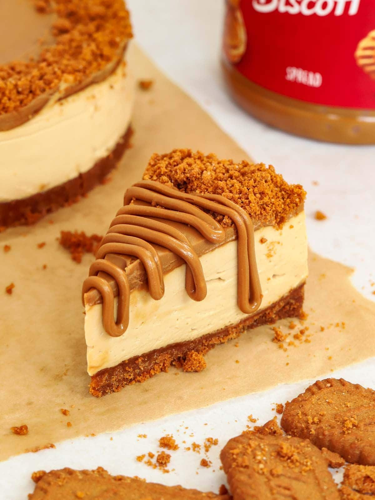

Lotus Biscoff Cookie Cheesecake

Description
Lotus Biscoff Cookie Cheesecake is the perfect dessert for those who love the rich, spiced flavor of Lotus Biscoff cookies. This indulgent cheesecake combines a creamy, velvety filling with a buttery Biscoff cookie crust, creating a deliciously unique flavor experience. Topped with a layer of smooth, melted Biscoff spread and finished with cookie crumbles, this cheesecake offers the perfect balance of sweetness and spice, with a delightful crunch in every bite.
Whether you're hosting a special occasion or just want to treat yourself, this cheesecake is a crowd-pleaser that's surprisingly easy to make. With its blend of smooth cheesecake and crunchy cookies, it's sure to become a favorite for anyone with a sweet tooth!
Ingredients
- 2 cups Lotus Biscoff cookies, crushed (for the crust)
- 6 tablespoons butter, melted
- 16 oz cream cheese, softened
- 1 cup heavy cream
- 3/4 cup powdered sugar
- 1 teaspoon vanilla extract
- 1 cup Lotus Biscoff Spread
- Extra Lotus cookies for garnish
Steps
-
Prepare the Crust: Mix the crushed Lotus Biscoff cookies with melted butter until combined. Press the mixture into the bottom of a springform pan to form the crust. Refrigerate for 10-15 minutes to set.
-
Make the Filling: In a large bowl, beat the softened cream cheese, powdered sugar, and vanilla extract until smooth.
-
Add the Cream: Gradually add the heavy cream to the cream cheese mixture, beating on medium speed until it becomes light and fluffy.
-
incorporate Biscoff Spread: Warm the Lotus Biscoff spread slightly until smooth, then fold it into the cheesecake filling until fully combined.
-
Assemble and Chill: Pour the cheesecake filling over the prepared crust. Smooth the top and refrigerate for at least 4 hours or overnight. Garnish with extra Lotus Biscoff cookies before serving. Enjoy!